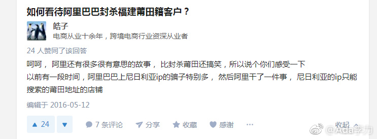

#创业#找资料看到这么一个趣闻：“以前有一段时间，阿里巴巴上尼日利亚ip的骗子特别多， 然后阿里干了一件事， 尼日利亚的ip只能搜索的莆田地址的店铺 “
尼日利亚垃圾邮件有段时间很泛滥，就是继承一大笔财产无法提出，需要你的协助。最开始是在美国欧美行骗，后来中国也出现了，2000年左右我的邮箱就收到不少。不过没想到后来尼日利亚骗子还上阿里巴巴了，而且，阿里巴巴很好地做了中介工作，让国际骗子对阵莆田骗子。
这个事，让我对阿里巴巴印象还挺好的。这么有意思的解决方案，我大概之前是想不到的。
尼日利亚垃圾邮件有段时间很泛滥，就是继承一大笔财产无法提出，需要你的协助。最开始是在美国欧美行骗，后来中国也出现了，2000年左右我的邮箱就收到不少。不过没想到后来尼日利亚骗子还上阿里巴巴了，而且，阿里巴巴很好地做了中介工作，让国际骗子对阵莆田骗子。
这个事，让我对阿里巴巴印象还挺好的。这么有意思的解决方案，我大概之前是想不到的。
- 